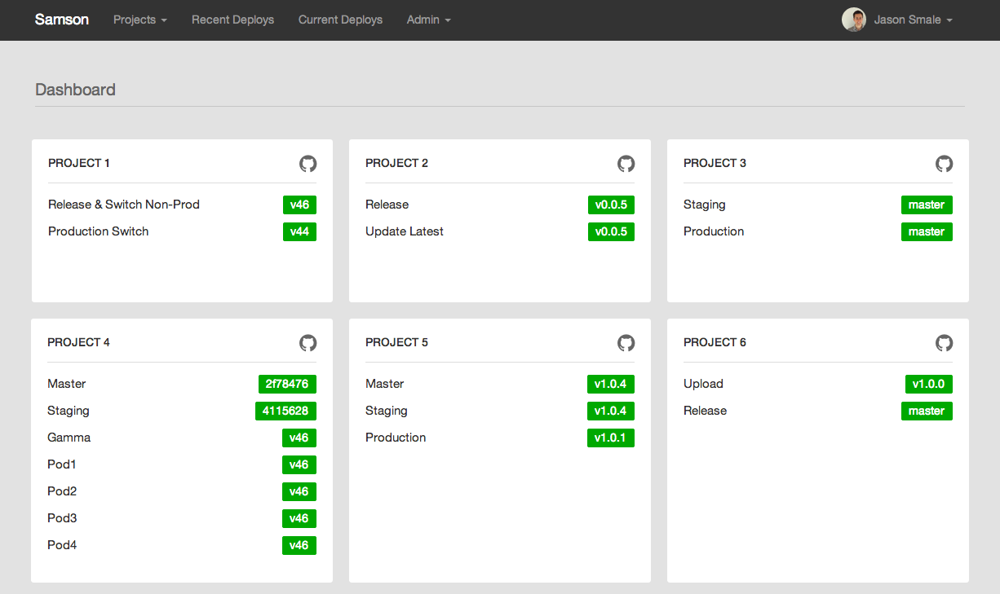
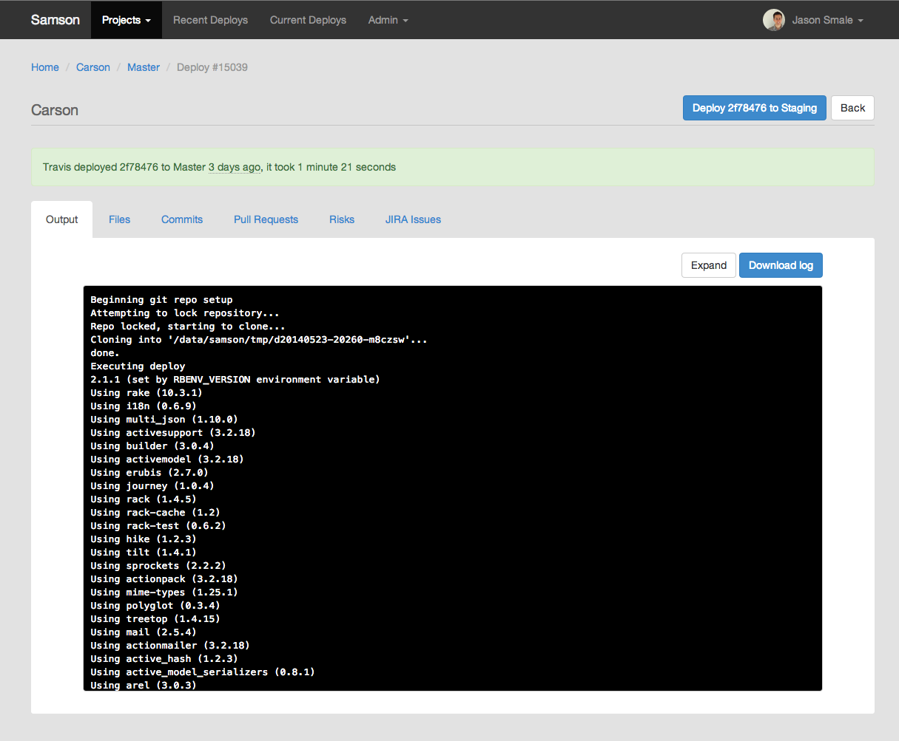
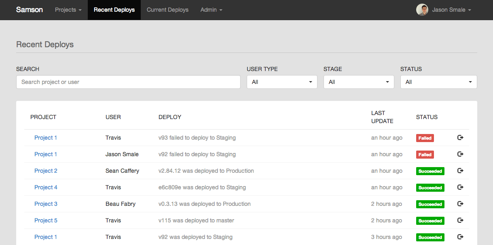

class: center, middle # Zendesk's Docker journey ## From hey to yay! ??? * Thanks for coming * First meetup in this amazing space, woohoo! * Been in this building exactly 17 days :) --- class: center, middle # Ash McKenzie <h3 style="margin-top: -40px">Tech Lead DevOps Engineer</h3> ??? * Bit about me.. * APAC Tech Lead which includes the Melbourne and Singapore offices * At Zendesk 18 months, come from a more software engineering background, prefer the system problem space * If I wasn't getting down and dirty with DevOps work, I'd be working with arduino, micro controllers or what is now called the IoT --- class: center, middle # Zendesk ??? * Cloud based customer service platform * What does that mean? We help our customers help their customers :) * Some of our customers include - Rockstar Games, Uber, Shopify, Groupon, Twilio --- # Topics ### Why Docker? ### POD architecture ### Deployment ### Project X ### Kubernetes ### Tips --- layout: false class: center, middle # Why Docker? --- class: topic-template # Why Docker? <br/> * `Dockerfile`, so easy! <i class="twa twa-joy"></i> * Application isolation * Application and operating environment described in a single repository <i class="twa twa-joy"></i> <i class="twa twa-joy"></i> * Docker Hub * Permeated our workflow for experimentation * So much <i class="twa twa-heart"></i> from all teams ??? * Dockerfile - a simple yet powerful concept that both developers and sysadmins can leverage * The beautiful feeling of describing your application and your operating environment in a single repository --- layout: false class: center, middle # POD architecture ??? * Now for some context * Lets take a minute to talk about Zendesk's pod architecture --- layout: true class: topic-template # POD architecture ??? * Here's a rough overview of a pod * A Pod is a self-containted Zendesk stack that we have duplicated in 11 locations all over the world * The challenge for is to grow each pod as our customer base grows --- <img src="./images/zendesk-pod.png" /> ??? --- layout: false class: center, middle # Deployment --- layout: true class: topic-template # Deployment --- ## Samson [github.com/zendesk/samson](https://github.com/zendesk/samson) * Transparent * Flexible * Audit trail * Our (open source) deployment tool ??? * Flexible - essentially a script runner --- layout: true class: topic-template # Deployment > Samson ---  ??? * List of projects that can be deployed and the different stages * A stage is / can be.. --- class: center name: samson-2  ??? * Here's a real app called Carson being deployed ---  ??? * List of recent deploys --- layout: false class: center, middle # Project X --- layout: true class: topic-template # Project X --- ## Goals * Assemble a team of engineers from all offices * Rapidly deploy new services & applications with little involvement from Ops * Easily scale up instances that run services & applications * Leverage cloud providers for speed and flexibility ??? * We've traditionally have not ventured into cloud providers due to data compliancy challenges --- ## Implementation * Utilised Samson, Docker and consul * X agent running on each node watches consul, for a new 'release document' * Pulls down docker images, builds as described in release document --- Release document example: ```json { "doc_version": "1.0", "release_id": "10883", "release_author": "Bat Man <batman@zendesk.com>", "release_at": "2015-05-02 22:30:05 +0000", "image": "docker-registry.com/app@sha256:94c02c355ae42a9adc12f3fca6727a2d59afe1d9", "env": { "RAILS_ENV": "production", }, "encryption_key": "vault:x_encryption_key_1", "roles": { "resque_worker": { "command": "bundle exec rake resque:worker", } } } ``` --- ## Outcome * It worked! * Integrated into Samson * Ultimately shelved because: * Scaling up instances was still challenging * Other technologies had matured, namely Kubernetes ??? * Before Docker swarm was stable --- layout: false class: center, middle # Kubernetes <img src="./images/kubernetes-logo.png" width="20%" /> --- layout: true class: topic-template # Kubernetes --- ## Why Kubernetes? * Similar core concepts to Project X (release doc vs. pod definition file) * API drive, Samson can still drive * Supports Open Container Format (OCF) - Docker & Rocket * Maintained by a large group of contributors (560 according to GitHub!) --- ## Xmas 2015 First production release! Stay tuned <i class="twa twa-smile"></i> ??? * Aiming for first production application running using Kubernetes before Xmas. --- layout: false class: center, middle # Tips --- layout: true class: topic-template # Tips --- name: tips-debian ## `FROM debian:latest` <img class="logo" src="./images/debian-logo.png" /> Latest Debian, comes in at 119MB. ??? For reference, Ubuntu 14.04 is 179MB --- name: tips-alpine ## `FROM alpine:latest` <img class="logo" src="./images/alpine-linux-logo.png" /> A minimal Docker image based on Alpine Linux with a complete package index and only 5 MB in size! --- ## Shoreman [github.com/chrismytton/shoreman](https://github.com/chrismytton/shoreman) Bash implementation of Foreman that parses a file called `Procfile` without the need for Ruby. Procfiles are portable and parseable by Foreman (Ruby), Honcho (Python), Forego (golang), etc. ??? * Foreman originally developed for the Heroku platform * Are you sensing a theme with the project names?!? :) --- layout: true class: topic-template # Tips > Shoreman --- `Procfile` structure: ```ruby <label1>: <command1> <label2>: <label2> ... ``` Example: ```ruby crond: crond -f -d 6 app_log: tail -f ${APP_LOG_FILE} ``` --- `Dockerfile` example: ```docker FROM alpine:latest ENV APP_LOG_FILE /var/log/uptime.log RUN apk --update add bash ca-certificates RUN wget https://github.com/chrismytton/shoreman/raw/master/shoreman.sh -O /usr/local/bin/shoreman && \ chmod 755 /usr/local/bin/shoreman RUN echo "*/1 * * * * uptime >> ${APP_LOG_FILE}" | crontab - RUN touch /var/log/uptime.log COPY Procfile / ENTRYPOINT [ "/usr/local/bin/shoreman" ] ``` --- `Procfile` example ```ruby crond: crond -f -d 6 app_log: tail -f ${APP_LOG_FILE} ``` Output: ```shell $ docker build -t docker_demo $ docker run -ti docker_demo 01:26:44 crond | '/usr/sbin/crond -f -d 6' started with pid 6 01:26:44 crond | crond: crond (busybox 1.23.2) started, log level 6 01:26:44 app_log | 'tail -f ${APP_LOG_FILE}' started with pid 12 01:27:00 crond | crond: USER root pid 19 cmd uptime >> /var/log/uptime.log 01:27:00 app_log | 01:27:00 up 9:54, 0 users, load average: 0.00, 0.01, 0.04 ``` ??? * This Procfile will run the cron daemon and also tail the application and cron logs, very useful! --- name: tips-percheron ## Percheron [github.com/ashmckenzie/percheron](https://github.com/ashmckenzie/percheron) <br/><br/> Looking for a Fig / `docker-compose` alternative? Try Percheron, written in Ruby, by me <i class="twa twa-smile"></i> --- name: thanks layout: false class: center, middle # Thanks! ### We're hiring, so come and talk to me! ### or ### [amckenzie@zendesk.com](mailto:amckenzie@zendesk.com) <!-- ------------------------------------------------------------------------------------------- -->